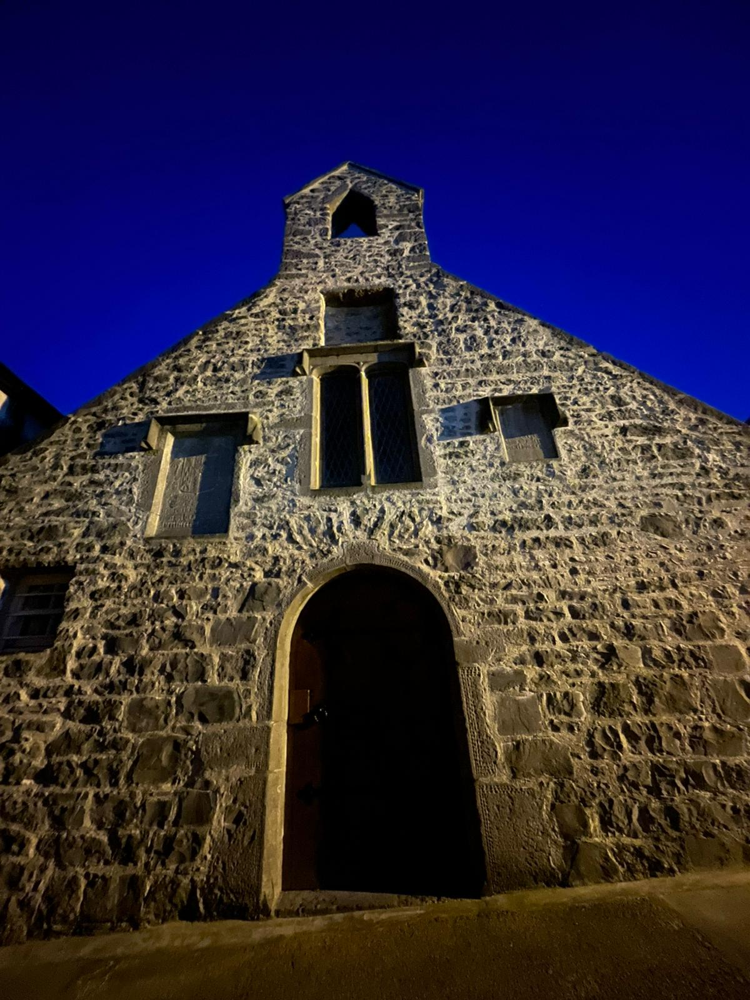
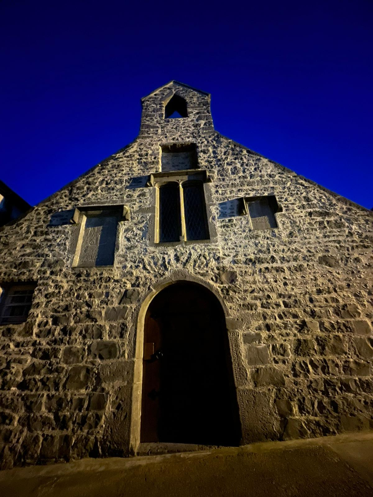

Step into Kilkenny’s dark past
Step into the shadows of Kilkenny’s medieval streets and uncover the city’s darkest secrets. Our evening walking tour brings you face to face with the real haunted history of Ireland’s most atmospheric city.
Beginning at the magnificent Kilkenny Castle, you’ll journey through centuries of chilling tales — from ghostly apparitions to eerie legends whispered through time. Follow your guide down Mary’s Lane and through the narrow Butter Slip, where spirits are said to linger long after nightfall. The tour concludes at the historic Courthouse, a site steeped in stories of trials, tragedy, and restless souls.
Join us if you dare... and see Kilkenny as you’ve never seen it before.
Gallery
A glimpse of the lanes, arches and faces you’ll meet along the way.


 
